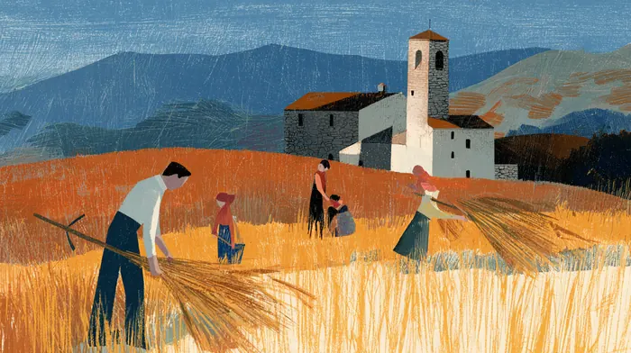
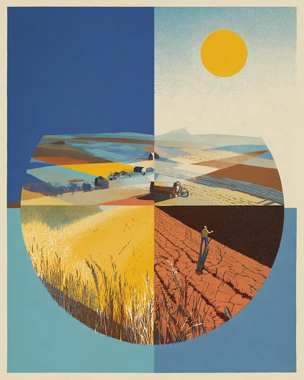

一個佃農的兒子，看見世界裂成兩半
1961 年 5 月 15 日，良十三世的《新事》通諭頒布滿七十年。七十九歲的若望廿三世選在這一天簽署他的第一道社會通諭。他出身義大利貝加莫鄉間的佃農家庭，三年前當選時，許多人以為他只是一位過渡的教宗。
他眼前的世界，科技一日千里：
如：用於戰爭及逐漸朝向和平用途而進行的原子能……尤其藉無線電與電視機，各民族間的距離已近乎消失……最後，登陸星球的途徑亦正在開闢。
可是財富沒有跟著平均。他點出三道裂縫：
首先，在農業、工業和公共服務之間的不平衡；其次，在同一國內的各地區間，有繁榮與否的不平衡；最後，就世界各國來說，各國間有富裕與否的不平衡。

- 1961 · 4加加林繞行地球一圈，人類第一次進入太空。
- 1961 · 5《慈母與導師》簽署，同年七月公布。
- 1961 · 8柏林圍牆一夜築起，冷戰最緊繃的時刻。
- 1962 · 10若望廿三世召開的梵蒂岡第二屆大公會議開幕。
亞洲殖民地區的人民驅逐了殖民政權，享有了獨立自主的權利
所以他決定寫這道通諭，用他自己的話說，是要：
把三位前任教宗的遺訓，加以肯定與註解，並對現代新的問題，清晰地表明天主教教義的立場。
一八九一年種下的種子
麥子先有根。通諭的前五十段，若望廿三世回頭整理三位前任留下的社會訓導，說明這棵樹是怎麼長起來的。
這道通諭提出解決勞工問題的原則，使勞工的地位，按照公教教義的標準，得以恢復。
私產也要為別人服務
但因私產權含有為社會服務的天職，故擁有私產者不應為一己之利益，必須也為他人利益而運用之。
活下去的權利最優先
人類維持生活的權利，遠超乎一切有關經濟的其他權利，而且也遠在私產權之上。
讓莖站直：個人與政府之間
麥稈要站得直，靠的是平衡。第一章討論私人的主動與政府的介入，教宗用《四十年》提出的「輔導原則」來拿捏分寸，今天多譯為「輔助原則」。
由較小較低的團體能勝任的事，讓給較大與較高的團體去作，是不公道的
同一片天空，兩種收成
第二章是全篇最新的部分，也是篇幅最長的一章。教宗把目光轉向前任們較少談的地方：農村、落後的地區，和貧窮的國家。
城與鄉
不少農民離棄了生於斯長於斯的鄉村，而投入商賈雲集的市鎮，或工業薈萃的都會
最大原因，無疑地尤其在於他們隨時隨地見到自己的工作沒有多大出息，自己的生活和文化水平都躺在一般人們以下。
他們好像住在造化的偉大庭院中，經常周旋於動植物間。
因為在現代，個人的發言，正如俗語所說，不啻過耳之風。
富國與窮國

對挨飢受餓的民族，我們全體都應負責。
最有爭議的一段：人口
本段呈現 1961 年教宗的原始立場。今日教會內部對此仍有討論，但通諭原文如下。
最近幾年來，世界各地，尤其貧困國家，對經濟發展及食糧供應，如何應付人口大量增加一點，掀起了激辯。
應努力運用科技發明，以徹底認識並廣泛征服自然界威能。
為解決這問題，決不得採用違反人性尊嚴的手段
人人應將人的生命視為神聖的。
真正的障礙
理由並非缺乏科技或經濟能力，而是他們的互不信任。
現代富庶國家的人民，逐漸感到身外財富之不能滿足人心，並從心底拔除了現世天堂的幻想。
落地的麥粒：觀察、判斷、行動
麥粒要落在地裡才會結實。第三章談怎麼把社會訓導真的做出來，並留下一個後來影響深遠的方法。它源自比利時卡丁神父創辦的公教青年工人會，從此成為全球教會社會行動的共同語言。
聖教會的社會學，大抵可分三個步驟去實施：一、觀察實際情形；二、在社會學理論的燭照下，縝密研討該實際情形；三、依照時地的習俗，決定何者可行，何者當做，以實現該理論。這三個步驟可以三句話概括之：觀察、判斷、行動。
別以為僅將所學得的原則存思於心已足，而不需要事實的表現。
自己試一次。挑一件你身邊的事，例如堂區附近的獨居長者、公司裡的派遣同事、家鄉的小農，照三個步驟寫下來。內容只存在你自己的瀏覽器裡。
- 觀察See
- 判斷Judge
- 行動Act
連在心地忠誠的教友間，也可能發生歧見，遇到這類光景時，應該努力表示並實行彼此尊重，並互相交換意見，以求出一個共同點
最為可憎的現象，是人類在本性領域內，成為巨人，在永遠及超性領域內，卻變為侏儒。
十個關鍵詞
輔導原則
今多譯為輔助原則。小團體做得到的事，大團體不該搶去做；政府的角色是贊助與補位，不是取代。
第 53 段
社會化
人與人之間的連結、各種團體與制度越來越多。教宗認為它利弊並存，關鍵在不讓人失去自主。
第 59–67 段
公平工資
工資不能只看市場，要讓勞工和家人過合乎尊嚴的生活，也要顧及公司與國家的公益。
第 68–81 段
工人參與
工人有權參與公司的管理事宜，公司應該像一個由人組成的團體。
第 91–97 段
私產的社會性
私有財產是本性的權利，但同時帶著為社會服務的責任，政府權力再大也不能否認這一點。
第 19、30、121 段
公益
整個社會一起好起來的條件。工資、產業與政府的作為，都要放在公益之下衡量。
第 78–81 段
農村與農民
農民離鄉是因為工作沒有出息。教宗主張改善農村的生活與保障，並鼓勵農民團結、組織合作社。
第 124–149 段
國際援助
富國有責任援助窮國，給技術與資金，但必須放棄統治野心，尊重對方的特性，讓對方能自行發展。
第 158–177 段
人口與生命
面對人口增長，教宗主張靠科技與合作解決，並強調不得採用違反人性尊嚴的手段，人的生命是神聖的。
第 186–200 段
觀察、判斷、行動
把社會訓導落實的三個步驟：看清實際情形，用教會的原則判斷，決定可行而該做的事。
第 237 段
你讀懂了嗎？
五題，不計分，答錯可以再選。
帶回生活的三個提問
- 我吃的米和菜，是誰種的？他們的工作有「出息」嗎？
- 在我的公司或堂區裡，有什麼事是小團體做得到、卻總被上面接手的？
- 這個月，我能為一件身邊的事完整走一次觀察、判斷、行動嗎？